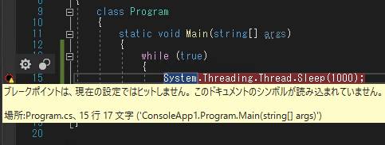
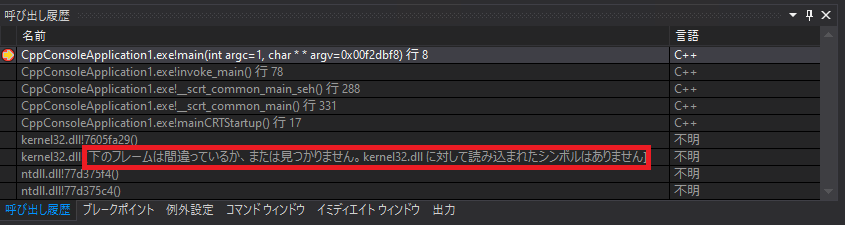
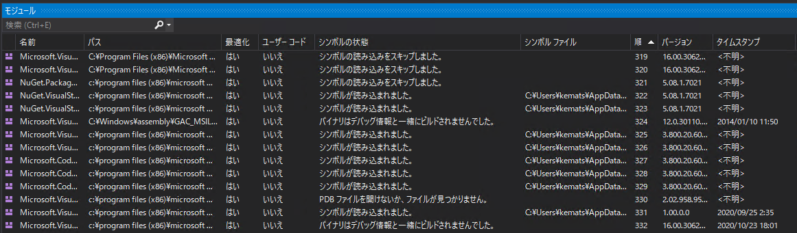
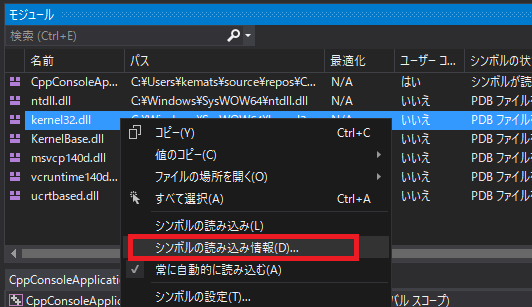
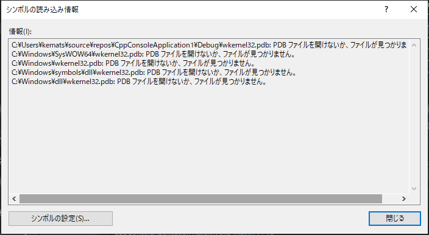
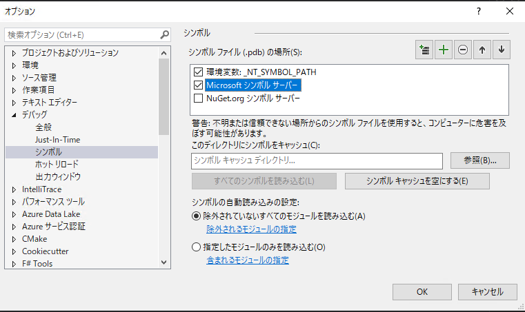
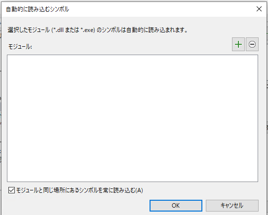
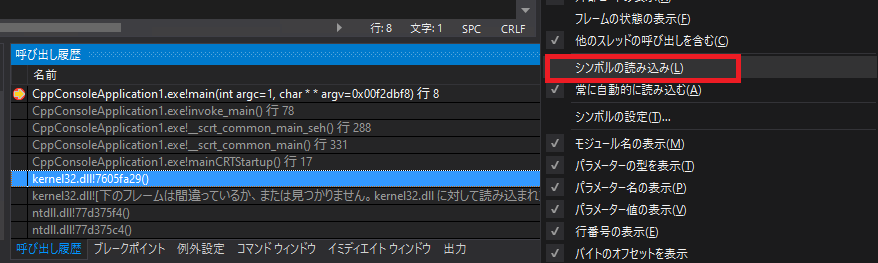
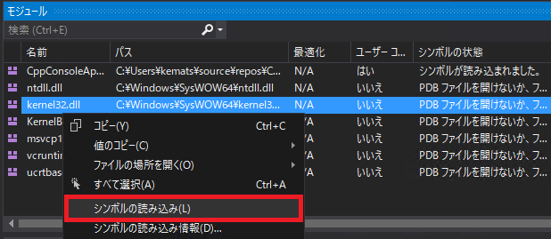

こんにちは、Japan Developer Support Core チームの松井です。
今回は、シンボル ファイルと Visual Studio のシンボル設定についてご案内します。
シンボル ファイルはアプリケーションをデバッグする上で欠かせないものの一つです。アプリケーションのデバッグは開発時だけでなくリリース後も必要になる可能性があり、またシンボルをロードするにはそのシンボルがモジュールのビルドと同時に生成されたものである必要があるため、リリース用のビルドであってもシンボル ファイルを生成して手元で大切に保管しておかなければなりません。そのため、Visual Studio のコンパイル オプションではシンボル ファイルの生成が既定で有効となっています。
シンボル ファイルがない場合、ユニファイド サポート等で弊社へアプリケーションのデバッグのご支援をご依頼いただいても効果的なご支援が出来ない場合があります。逆アセンブルによって処理を追跡することが困難で非常に多くの時間を要する作業となること理由の一つですが、たとえ問題のある処理が特定できたとしても対処が必要なソースコードの位置を示すことができない点もご支援が難しくなる大きな理由です。
残念ながらシンボル ファイルの重要性はあまり認知されておらず、弊社へのお問い合わせでもシンボル ファイルが保管されていないため採取できたダンプ ファイルからすぐに調査を進められないことが多くあります。再現が容易な場合はアプリケーションをビルドしなおしてもう一度再現させていただくことで調査が進められますが、一度しか発生しておらず問題が再現出来ない場合はせっかく取得できたダンプが無駄になる可能性があります。
2015 年 1 月 5 日に Visual Studio Blog で公開された記事 Understanding symbol files and Visual Studio’s symbol settings で、シンボルについての説明や Visual Studio での利用方法および設定が英語で紹介されていますので、この記事の内容がシンボルについてご理解いただくためのお役に立てれば幸いです。以降は上記ブログ記事の和訳となります。
Understanding symbol files and Visual Studio’s symbol settings
シンボルは、デバッグおよびその他の診断ツールの基本要件です。幸い、ほとんどの場合、Visual Studio でアプリケーションをビルドして Visual Studio でアプリケーションを起動するときにコードのシンボルについて意識する必要はほとんどありません。ただし、シンボルのロード方法やデバッガーのシンボル検索場所を変更したり、サードパーティ製品 (Windows や .NET ライブラリなど) のシンボルをロードすることがいつか必要になるかもしれません。また、シンボルはデバッグにおける非常に基本的なものであるため、私たちは継続してそのエクスペリエンスの調整を行っており、Visual Studio の動作の詳細を理解することで何時間ものフラストレーションを軽減できます。
このブログ ポストでは、シンボルとは何か、Visual Studio のシンボル設定を構成する方法 (デバッガーだけでなくパフォーマンス ツールや IntelliTrace などの診断ツールでも使用されます)、デバッグ時に利用できる様々な設定、Visual Studio が必要なシンボル ファイルを見つけられない場合のトラブルシュート方法について説明します。
シンボルの基本
シンボル ファイルの詳細について詳しく説明する前に、シンボルとは何か、なぜシンボルが重要なのかを簡単に確認しておきます。
- シンボルとは何ですか?: Microsoft コンパイラーの場合、シンボルはビルドの一部として生成される .pdb ファイルです。
- シンボル (.pdb) ファイルには何が含まれていますか?: シンボル ファイルの正確な内容は言語ごと、コンパイラーの設定によって異なりますが、ざっくり言えば、その内容はコンパイラーがソースコードをプロセッサが実行する命令に変換した方法の記録です。
- なぜシンボルが必要なのですか?: シンボルがないと、ツールはアプリケーションで実行されている命令をその元になったソースコードに関連付けることができません。
- デバッグ時、シンボル ファイルがないと特定のコード行にブレークポイントを設定できません。シンボルがロードされていない場合、デバッグ モードで警告マークがついた中抜きの丸が表示され、その上にマウス カーソルを置くと、シンボルがロードされていないためブレークポイントにヒットしないことがツールチップに表示されます。
- デバッグ対象によっては、完全な呼び出し履歴の表示やウォッチ ウィンドウによるオブジェクトの調査、データ ヒントの表示にはシンボルが必要になります。(例えば C++ はこれに当てはまります。)
- 注:ヒープを含まないダンプ ファイルをデバッグしている場合、デバッガーが元のバイナリ ファイルにアクセスしてロードする正しいシンボル ファイルを決定できるようにする必要があります。別の言い方をすれば、ヒープ情報を含まないダンプをデバッグする場合、対応するバイナリ ファイルとシンボル ファイルの両方がシンボル パスに配置されている必要があります。
Visual Studio の既定の動作
Visual Studio の詳細設定を見ていく前に、一度立ち止まって既定の動作 (つまり、設定を変更したことがない場合にどのように動作するのか) を確認しておきます。
- Visual Studio はプロセス内のすべてのバイナリ (モジュールと呼ばれます) について、モジュールがロードされたときにシンボルのロードを試みます。また、既に読み込まれている全てのモジュールについて、プロセスにアタッチしたときにシンボルのロードを試みます。
- 例外として、マネージド (.NET) アプリケーションをデバッグしている場合、[マイ コードのみを有効にする] が設定されていると「マイ コードではない」とみなされたシンボルをロードしません。
- シンボルの場所が設定されていないため、Microsoft のランタイム ライブラリのシンボルは見つかりません。
- [呼び出し履歴] ウィンドウまたは [モジュール] ウィンドウでモジュールを右クリックしてシンボルの読み込みを選択すると、ローカル マシンにシンボルが見つからないと仮定して自動的に Microsoft パブリック シンボル サーバーからシンボルの取得を試みます。
- 次の場合、Visual Studio は常にシンボルを検索します。
- シンボル ファイルが対応するモジュールと同じフォルダーにある場合。Visual Studio プロジェクトのデフォルトのビルド出力設定では、バイナリと同じフォルダーにシンボルが出力されます。これは、Visual Studio が常にプロジェクトのシンボルを見つけられることを意味します。
- シンボル ファイルがコンパイル時に配置されたディレクトリと同じ場所にある場合。.pdb ファイルのフル パスはビルド時にバイナリ ファイル内に書き込まれます。
シンボルがロードされているかどうか、ロードされていない場合はその理由をどのように確認できますか?
上記のスクリーンショット (中抜きされた丸のブレークポイント) は、ブレークポイントを設定しようとしているソース ファイルのシンボルが読み込まれなかった状況を示しています。シンボルがロードされているかどうかを判断する方法は以下があります。
- シンボルが読み込まれなかったことを示すメッセージが [呼び出し履歴] ウィンドウに表示されます。
- [モジュール] ウィンドウ ([デバッグ] - [ウィンドウ] - [モジュール]) に次の内容が表示されます。
- シンボル ファイルの状態 (読み込み済み、スキップ、シンボルが見つからない、バイナリがデバッグ情報と一緒にビルドされていない)
- 読み込まれたバイナリ ファイルのパス
- 読み込まれたシンボル ファイルのパス (読み込まれている場合)
- モジュールのバージョン
- モジュールのタイム スタンプ

さらに、デバッガーはシンボルが読み込まれなかった理由とシンボルを検索した場所を表示できます。この情報を表示するには、[モジュール] ウィンドウ開いてモジュールを右クリックし、[シンボル読み込み情報] を選択します。
これにより、デバッガーがシンボル ファイルを検索したすべてのパスを示すメッセージ ボックスが表示されます。
シンボルが読み込まれない一般的な理由は以下のとおりです。
- シンボル パスが正しい場所を示していない。
- シンボル ファイルがプロセスにロードされたものと異なるバージョンのモジュールから生成されている。
- Visual Studio では、シンボル ファイルがモジュールと同じビルドで生成されたものである必要があります。ソースコードが同一であっても、異なるビルドで生成されたシンボルを読み込むことはできません。
- [マイ コードのみを有効にする] の設定はデバッガーのシンボル ファイルの読み込みを抑止します。(マネージドの場合のみ)
Visual Studio 設定の構成
シンボルとは何か、およびシンボルがロードされているかどうかを判断するう方法を理解したところで、Visual Studio のシンボル設置絵を構成する方法を見ていきましょう。シンボル設定を表示するには、[デバッグ] メニューに移動して [オプション] (古いバージョンの Visual Studio では [オプションと設定]) を選択し、[シンボル] サブ ページを選択します。
このページには以下の設定があります。
- シンボル ファイル (.pdb) の場所
- シンボル キャッシュの設定
- [すべてのシンボルを読み込む] ボタン
- シンボルの自動読み込みの設定
シンボル ファイルの場所
Visual Studio から自分のアプリケーションをビルドしてデバッグしている場合は自分のモジュールのシンボルでは当てはまらないかもしれませんが、サードパーティのシンボル ファイル (Microsoft のシンボル ファイルなど) が必要な場合や、ローカル マシンにシンボルがない可能性がある環境で作業している場合 (アプリケーションがビルド サーバーでビルドされているなど(※)) は、リモートのシンボルの場所 (シンボル サーバー) がシンボルの読み込みで使用されます。
[シンボル ファイルの場所] ダイアログは、デバッガーにシンボル ファイルを検索する場所を指示します。シンボル ファイルを検索する場所は、http シンボル サーバー (既定で登録されている “Microsoft シンボル サーバー” など) やネットワーク共有、またはローカル マシン上のフォルダーが指定できます。
- 必要な数のパスを追加できます。
- Microsoft のパブリック シンボル サーバーの設定が既定で登録されています。Microsoft 製品のモジュール (ランタイムやオペレーティング システムなど) のシンボルをロードする場合、このチェック ボックスにチェックを入れてください。
- Visual Studio は、指定された順序に関係なく、ネットワーク パスへ照会する前にローカル パスを検索します。
- パフォーマンス上の理由から、Visual Studio 2012 Update 1 以降では、自動シンボル読み込みが有効になっている場合、Visual Studio は 1 つのセッション (Visual Studio を再起動するまで) で 1 つのシンボル ファイルに対して各シンボル サーバーを 1 回だけ検索します。つまり、サーバーにファイルが含まれていない場合に、デバッグを開始する度に毎回ネットワーク接続のコストを払う必要はありません。
- シンボル ファイルの場所に “環境変数: _NT_SYMBOL_PATH” が表示されている場合は、環境変数 _NT_SYMBOL_PATH が設定されていることを示します。Visual Studio は、Windows のライブラリを使用してシンボルを読み込みます。このライブラリは、常にこの環境変数に指定されている場所からシンボル ファイルを検索します。そのため、Visuak Studio でこのオプションのチェックを外すことはできません。Visual Studio でこの環境変数を使わない場合は、環境変数の設定を解除する必要があります。
他の目的でこの環境変数が必要な場合、環境変数を Visual Studio に限定して局所的に解除する簡単な方法は、開発者コマンド プロンプトを開いて “set _NT_SYMBOL_PATH=” を入力してから Visual Studio を起動することです。システムの環境変数は影響を受けません。
※ Azure DevOps Server (Team Foundation Server) を使用している場合は、シンボルとソースのアーカイブのサポートを追加する方法についてのこちらの記事も参考にしてください。http://bit.ly/SymbolServerTFS
※ 訳注: Azure DevOps Services はプライベート シンボル サーバーとしてもご利用いただけますので、ビルドに利用されている方は是非シンボルの管理でもご活用ください。https://docs.microsoft.com/ja-jp/azure/devops/artifacts/concepts/symbols?view=azure-devops
シンボル キャッシュ
シンボル キャッシュは、Visual Studio がリモートの場所から見つけたシンボルを、後の利用のために複製を置いておくためのローカルの場所です。シンボル キャッシュのパスを指定すると、Visual Studio はシンボル ファイルの場所からシンボルを検索する前に、シンボル キャッシュを検索します。パフォーマンス上の理由から、リモートの場所にシンボルを格納する必要がある場合は、シンボル キャッシュを指定することをお勧めします。
すべてのシンボルの読み込む
このボタンは、Visual Studio がデバッグ モードの間のみ有効になり、クリックすると、プロセス内のすべてのモジュールのシンボルの読み込みを試みるようデバッガーに指示します。
シンボルの自動読み込みの設定
Visual Studio は、2 つのシンボルの自動読み込みのモードを提供しています。
除外されていないすべてのモジュールを読み込む: タイトルが示すように、[除外されるモジュールの指定] をクリックしてモジュールを除外リストに追加しない限り、Visual Studio はプロセス内のすべてのモジュールのシンボルの読み込みを試みます。この設定は一般的に、プロセス内のほぼすべてのシンボルを読み込みたい場合、またはメモリやデバッグ開始のパフォーマンス上の理由からロードしたくない非常に大きなシンボルがごく一部しかない場合に適しています。
指定したモジュールのみを読み込む: この設定は既定でディスク上のバイナリと同じ場所にあるシンボルを読み込みますが、[含まれるモジュールの指定] をクリックしてモジュールを含めるリストに追加しない限り他のモジュールのシンボルの読み込みは試みません。
- Visual Studio 2013 Update 2 以降、[含まれるモジュールの指定] ダイアログはモジュール名として * を受け付けます。したがって、例えば手動読み込みを使用したいが名前に “Microsoft” が含まれるシンボルは常に読み込みたい場合は、”*Microsoft*“ と入力することが可能です。
シンボルは、必要に応じて [呼び出し履歴] ウィンドウから手動で読み込むことができます。これを行うには、個々のフレームを選択して (または Ctrl+a ですべてを選択して)、右クリックして [シンボルの読み込み] を選択します。これにより、その時点で [呼び出し履歴] ウィンドウにあったすべてのモジュールのシンボルが読み込まれます。前回の読み込みによって現れたモジュールのシンボルの読み込みは自動的に行われないため、シンボルの読み込みで呼び出し履歴が改善され追加のモジュールが見つかった場合はこの手順を繰り返す必要があります。 
デバッグ中にシンボルを手動で読み込むもう一つの選択肢は、[モジュール] ウィンドウ ([デバッグ] - [ウィンドウ] - [モジュール]]) でそのモジュールを指定することです。
手動によるシンボル読み込みの詳細
[指定されたモジュールのみを読み込む] が私と Visual Studio チームの多くのメンバーが推奨する設定であることを強調しておきます。その理由は次のとおりです。
非常に大きなアプリケーションをデバッグする場合に、必要に応じてオンデマンドでシンボルを読み込むことができます。これは以下の点で役立ちます。
- デバッグ セッションのパフォーマンス - デバッグ中のプロセスのすべてのシンボルがロードされるのを待つ必要はありません。
- Visual Studio のメモリ - 非常に大きなアプリケーションをデバッグする場合は、関心のあるモジュールのみのシンボルを選択的に読み込む必要がある場合があります。Visual Studio は 32 ビット プロセスであるため、仮想メモリで最大 4 GB まで拡張できます。非常に大きなアプリケーションの場合、シンボル ファイルはこれより大きくなる可能性があります。
新しいアプリケーションをデバッグするとき、または新しい Visual Studio インスタンスでの最初のデバッグ セッション中に、予期しないパフォーマンスの問題に遭遇することなくシンボル サーバーを有効のままにしておくことができます。
マシン上で全体をビルドする非常に大きなソリューションがある場合は、[モジュールと同じ場所にあるシンボルを常に読み込む] チェックボックスをオフにして、上記の利点を確認する必要があります。
次に、デバッグ中にオンデマンドでシンボルを読み込むか、自動的に読み込む必要があるシンボルを設定する必要があります。
- これらのモジュールでブレークポイントをヒットさせる必要がある場合は、自動的に読み込むように設定する必要があります。
- 事前にシンボルが必要かどうかわからない場合は、オブジェクトの確認や呼び出し履歴の補完で必要な場合のみ、シンボルを読み込む必要があります。
まとめ
シンボルについて把握し、設定を正しく構成して最適なパフォーマンスを得ることは、非常に複雑になる可能性があります。上記の内容が、利用可能な設定を理解する上でお役に立てれば幸いです。ただし、ここで取り上げていない問題が発生した場合、または共有したいその他のフィードバックがある場合は、Visual Studio の “スマイルを送る” 機能 (※)、または MSDN フォーラム でお知らせください。
※訳注 この機能は新しい Visual Studio のバージョンでは廃止されています。https://docs.microsoft.com/ja-jp/visualstudio/ide/feedback-options の方法でフィードバックをお願いします。
本ブログの内容は弊社の公式見解として保証されるものではなく、開発・運用時の参考情報としてご活用いただくことを目的としています。もし公式な見解が必要な場合は、弊社ドキュメント (https://docs.microsoft.com や https://support.microsoft.com) をご参照いただくか、もしくは私共サポートまでお問い合わせください。